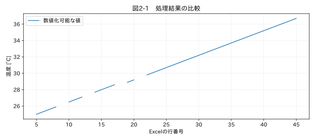

第I部 生データを理解する / 第02章
この章の節
Excel・CSVデータの構造を調べる
学習目標
見出し、単位行、データ領域、条件履歴を区別し、ExcelとCSVを誤解なく読み込む。列の意味が確認できない場合に処理を止め、元のExcel行へ戻れる情報を残す。
2.1 表の見た目とデータ構造は違う
試験帳票では、上部に試験名、担当者、室温、機種名があり、その下に見出しと数値が続く。最上段を自動的に列名にすると、試験名が列名になり、肝心の時刻列を見失う。結合セルは、人が見ると同じ意味を共有していても、ファイル内部では左上のセルだけが値を持ち、残りは空欄である。
教材のExcelは1行目が結合タイトル、2行目が機器情報、3行目が単位説明、4行目が列名である。18行目には完全空白行を入れ、別シートに条件変更の記録を置いた。CSV版にはその空白行がないので、同じサンプルでもファイルの行番号は一致しない。この違いを無視して「18行目を修正」と指示すると、別の値を変えてしまう。
2.2 最初は見出しを決めずに読む
pd.read_excel(path, header=None, nrows=6) は、最初の6行を見出しなしで読む。header=3 はゼロから数えた3番目、つまりExcelの4行目を列名として使う指定だ。sheet_name=None なら全シートが辞書として返るが、条件表を測定表と混ぜてはいけない。シート名の一覧を先に調べ、測定領域の役割を確定する。R1
複数行の見出しを持つ別帳票なら header=[2,3] で階層的な列名にできる。平坦な名前に変えるときは、例えば「入口_温度_degC」のように測定位置と量と単位を保存する。「温度」という名前が二つになるなら変換を停止する。pandasが読み込み時に重複列名を加工する場合もあるため、原本の見出しセルも確認する。
2.3 CSVには型とシートがない
CSVは区切り文字を持つテキストであり、セルの表示形式、結合、数式、シートを保持しない。「00123」は識別子か整数か、ファイルだけでは決まらない。読込時にすべてを dtype=str として保持し、意味が決まった列を変換する方法が安全な出発点になる。
文字コードを utf-8-sig、区切りをカンマと決めた読込が失敗したら、エラー文字を消すのではなくファイル仕様を調べる。教材 locale_cp932.csv はCP932、セミコロン区切り、小数点カンマである。読込例は pd.read_csv(path, encoding='cp932', sep=';', dtype=str) となる。errors='ignore' による文字の脱落は、単位や列名の誤認につながる。
| 設定 | 確認する内容 | 誤りによる症状 |
|---|---|---|
| encoding | UTF-8、CP932など | 文字化け、読込エラー |
| sep | カンマ、タブ、セミコロン | 全行が一列になる |
| header | 列名の開始行 | 必要列が見つからない |
| decimal / thousands | 小数点と桁区切り | 1234.5と1.2345の混同 |
| na_values | 機器の欠損コード | 有効な文字列を欠損に変換 |
2.4 空白行をどう扱うか
表の外にある空白行は解析領域に含めなくてよい。しかし、測定途中の空白行は記録欠落の証拠かもしれない。本書の汎用アプリは内部の空白行を残し、日時不正と欠損を付ける。削除するなら「帳票の改ページ行である」という根拠を別途記録する。
dropna() を表全体にかけると、一つでも欠損がある行を丸ごと失う設定になり得る。温度が欠けただけで正常な圧力まで捨てるのは、測定量の意味を保全する処理ではない。列ごとの有効性を持たせる方がよい。
関連する詳細実験は実践補講に掲載。入力形式・同期・補間・校正・多変量・チャンク境界を扱う。
実行するコードと結果
run.py · 共通処理の全ソース
教材フォルダで python examples/chapter02/run.py を実行。以下は省略のないスクリプト。共通モジュールは教材一式に含む。
from pathlib import Path
import sys
ROOT=Path(__file__).resolve().parents[2]
sys.path.insert(0,str(ROOT))
sys.path.insert(0,str(ROOT/'examples'))
import numpy as np
import pandas as pd
from common import load,truth,seconds,plot
from tsclean.core import numeric,timestamps,time_flags,hampel,freeze_candidates,interpolate_short,compare
from openpyxl import load_workbook
p=ROOT/'datasets/raw/10_irregular_excel.xlsx'
wb=load_workbook(p,data_only=False)
print('シート:',wb.sheetnames,'結合:',list(wb['測定'].merged_cells.ranges),'基準日:',wb.epoch)
preview=pd.read_excel(p,sheet_name='測定',header=None,nrows=6)
print(preview.to_string(index=False,header=False))
df=pd.read_excel(p,sheet_name='測定',header=3,keep_default_na=False)
x,missing,bad=numeric(df['測定値'],unit='degC')
print('読み込み行数:',len(df),'完全空白行:',int(df.eq('').all(axis=1).sum()),'変換不能:',int(bad.sum()))
plot(2,np.arange(len(df))+5,{'数値化可能な値':x},'温度 [°C]',xlabel='Excelの行番号')
検証環境での実行結果を開く
シート: ['測定', '条件履歴'] 結合: [<MergedCellRange A1:C1>] 基準日: 1899-12-30 00:00:00
模擬データ：温度試験（実測ではない） NaN NaN
ロガー SYNTHETIC-01 NaN
単位 degC 運転条件
時刻 測定値 条件
46023.375 25 加熱
46023.375347 25.3 加熱
読み込み行数: 41 完全空白行: 1 変換不能: 1

2.5 読み込めたことを確認する
図2-1の横軸は取得時刻ではなくExcel行番号である。これは帳票のどの位置に問題があるかを探すための図だ。時系列解析のグラフと役割を分ける。コードは結合範囲、シート名、基準日、先頭行を表示するので、Excel上の見た目と照合する。
数式セルはさらに注意が必要だ。openpyxlはExcelの計算エンジンではなく、数式の再計算はしない。数式を読むか、最後に保存された計算済み値を読むかで結果が変わる。教材の最終アプリは一般の数式帳票を再計算する機能を持たない。測定値として確定した出力を入力とするか、Excelで再計算・保存した状態を別途確認する。
同じ列名が複数ある場合、pandasが名前へ接尾辞を付けて読み込むことがある。本CLIはその前提を見落とさないよう元ヘッダーの重複を検査して拒否する。センサー名と位置を確認して入力アダプターで一意な列名へ対応付ける。
演習
基礎演習
10_irregular_excel.xlsx の測定シートを読み、完全空白行と「故障」の位置を原本で確認する。
応用演習
同じCSV版とExcel版を比較し、サンプル番号からExcel行への対応を示す。18行目の挿入後は対応がどう変わるか。
実務演習
毎月帳票のタイトル行が一行ずつ増える。見出しを自動検出する仕組みを設計する。似た列名を持つ条件表も同じシートにある場合、どのように誤検出を防ぐか。
演習解答・解説を表示する
基礎：41行を読み込み、その中の1行が完全空白行である。「故障」はCSVのサンプル番号8に対応する。数値化に失敗した文字列を空欄と区別する。
応用：CSVのサンプル番号を0始まりのiとすると、i<13ではExcel行=i+5、以後はi+6になる。正解は datasets/manifest.json にも記録した。
実務：「時刻」「測定値」など必要列の組合せ、後続数行の型、単位、周辺タイトルで候補を絞る。候補が二つなら人の確認を要求する。一つ見つかっただけで確定せず、採用した見出し行番号をログへ残す。
章末まとめ
読み込みは単なるファイル操作ではない。帳票の構造と列の意味を確定する工程である。まず小さく読み、元の位置と照合し、解析対象を決めてから全量を処理する。